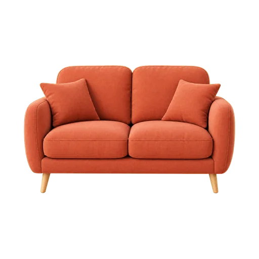
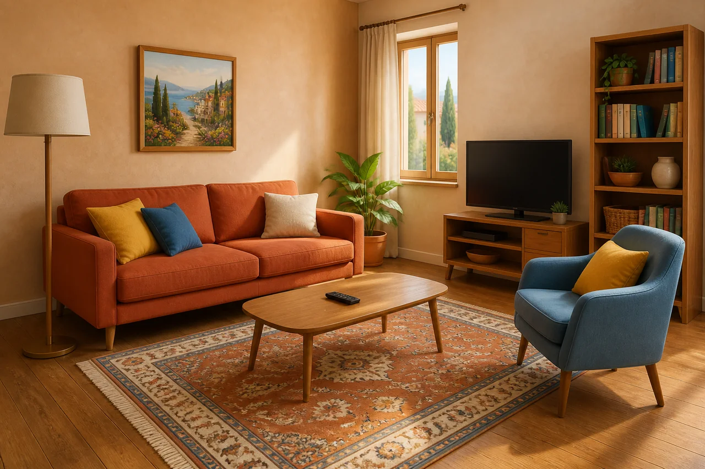
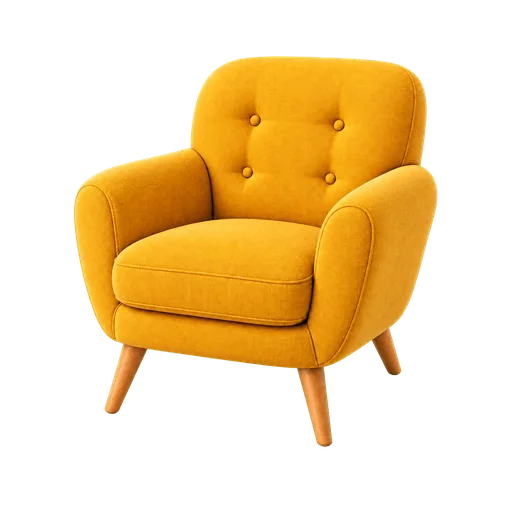
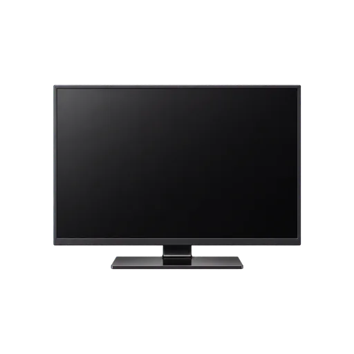
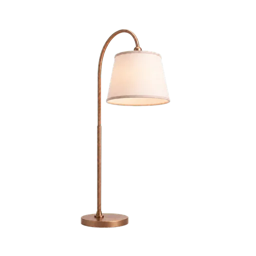
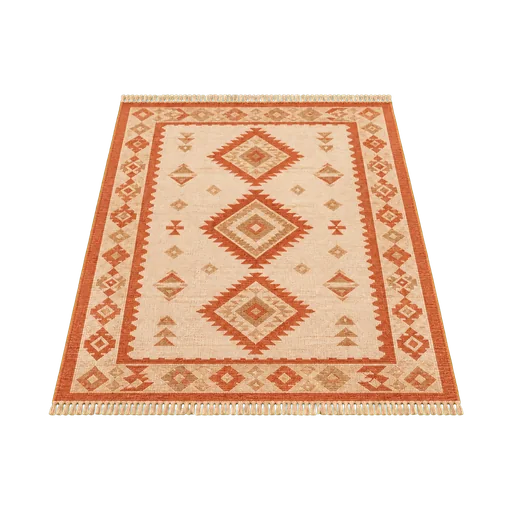
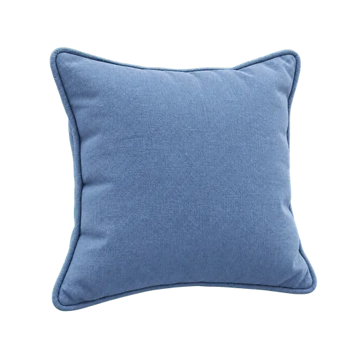
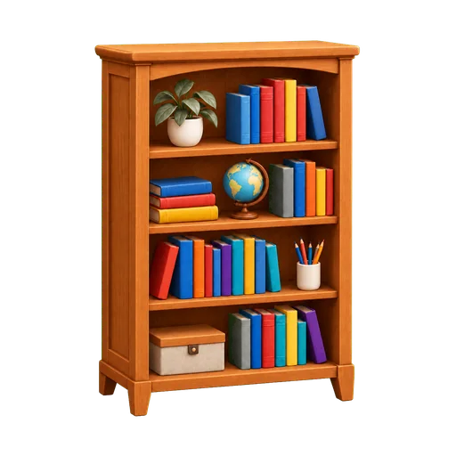
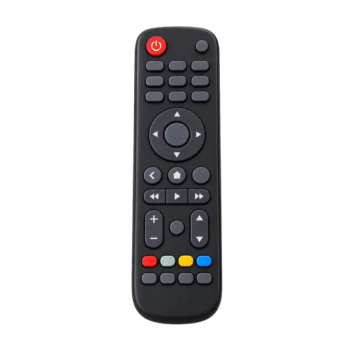

il divano
3つの例文
- Mi siedo sul divano.
- Il divano è davanti al televisore.
- Sul divano ci sono due cuscini.
語彙 A1 ～ A2
リビングルームに入り、画像と3つのイタリア語例文でそれぞれの単語を学びましょう。









名詞は必ず冠詞と一緒に覚えましょう。そうすれば単語の性も覚えられます。
画像を使った8問
画像を見てイタリア語の単語を入力してください。冠詞を付けてもよく、記載された同義語も正解になります。
自由翻訳8文
自分の翻訳を書き、解答例と比べてみましょう。内容は端末に保存されますが、得点には影響しません。
自由に翻訳してくださいI sit on the sofa.
提案された解決策: Mi siedo sul divano.
自由に翻訳してくださいThe armchair is next to the lamp.
提案された解決策: La poltrona è accanto alla lampada.
自由に翻訳してくださいI turn on the television.
提案された解決策: Accendo il televisore.
自由に翻訳してくださいThe lamp lights up the living room.
提案された解決策: La lampada illumina il salotto.
自由に翻訳してくださいThe rug is under the coffee table.
提案された解決策: Il tappeto è sotto il tavolino.
自由に翻訳してくださいThe cushion is on the sofa.
提案された解決策: Il cuscino è sul divano.
自由に翻訳してくださいThe books are in the bookcase.
提案された解決策: I libri sono nella libreria.
自由に翻訳してくださいI cannot find the remote control.
提案された解決策: Non trovo il telecomando.
Italiano con Martin
二人の先生、二つの視点。興味に合った学び方を選べます。